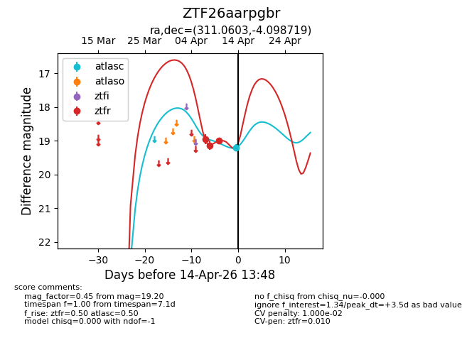
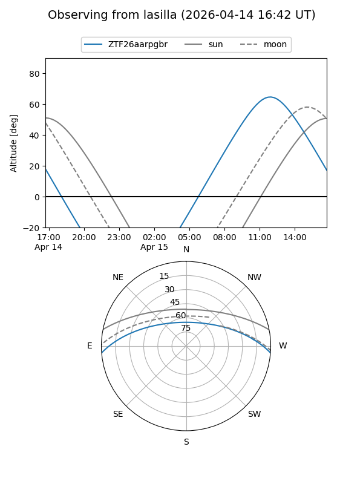
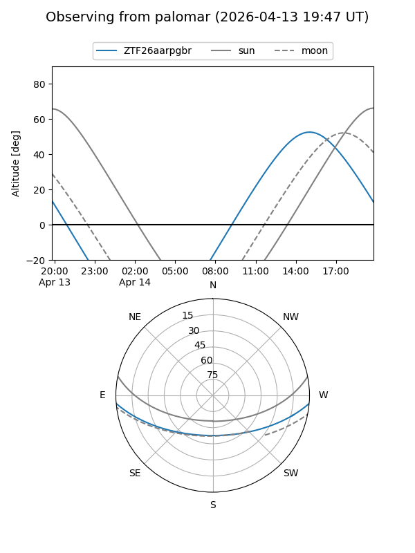
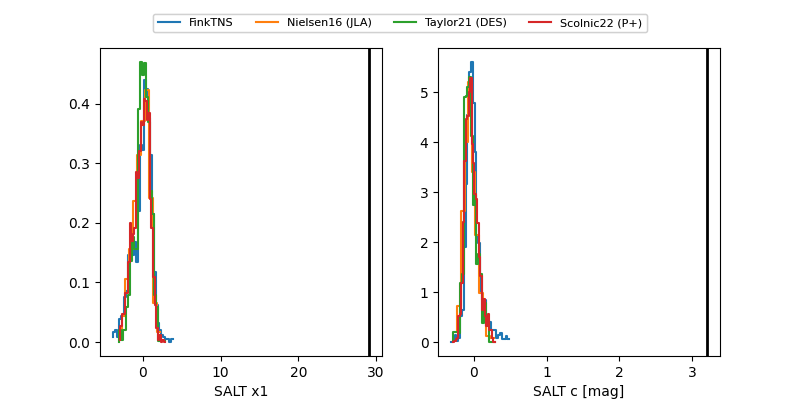

ZTF26aarpgbr
Target ZTF26aarpgbr at 2026-04-14 14:00
Aliases and brokers:
FINK: link
Lasair: link
ALeRCE: link
alt names
ZTF26aarpgbr (ztf,fink_ztf)
Coordinates:
equatorial (ra, dec) = 311.0603,-4.09872
equatorial (HMS+DMS) = 20:44:14.47,-04:05:55.39
galactic (l, b) = (42.6991,-26.87797)
Flags:
likely cv
Photometry:
last atlasc=19.20, ztfr=19.01
1 atlasc, 3 ztfr detections
Lightcurve

Visibility


Additional plots
